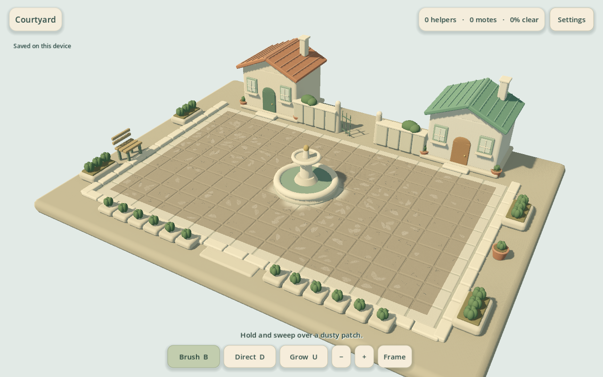
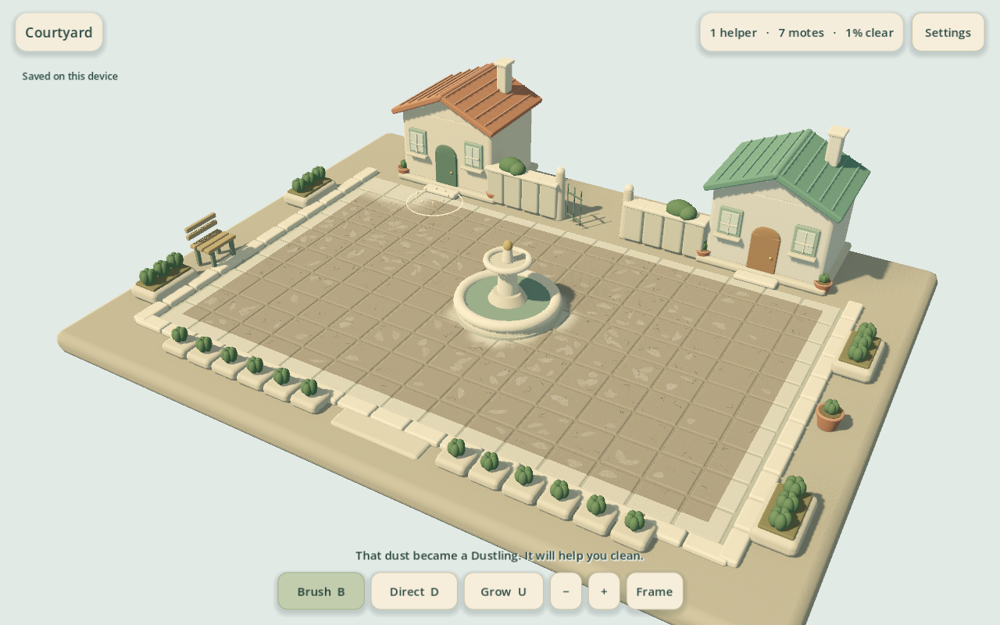
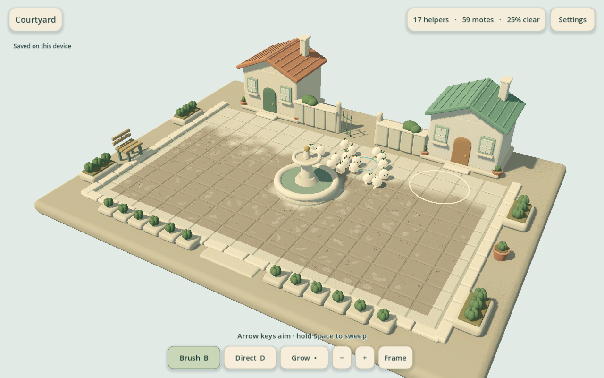
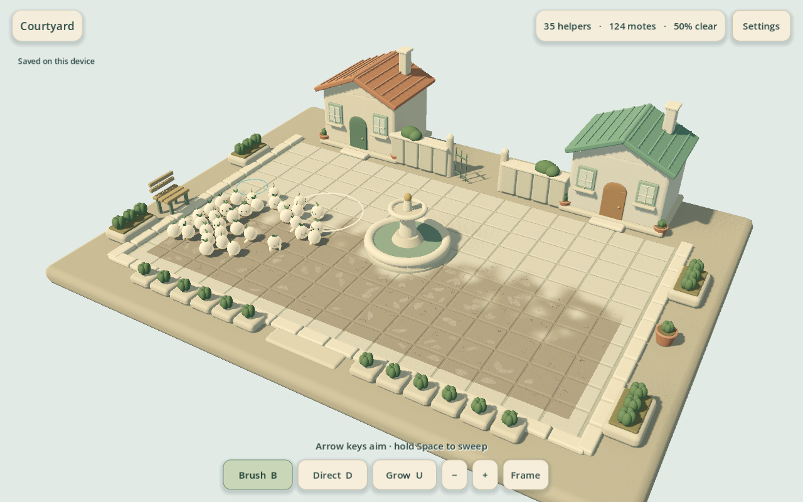
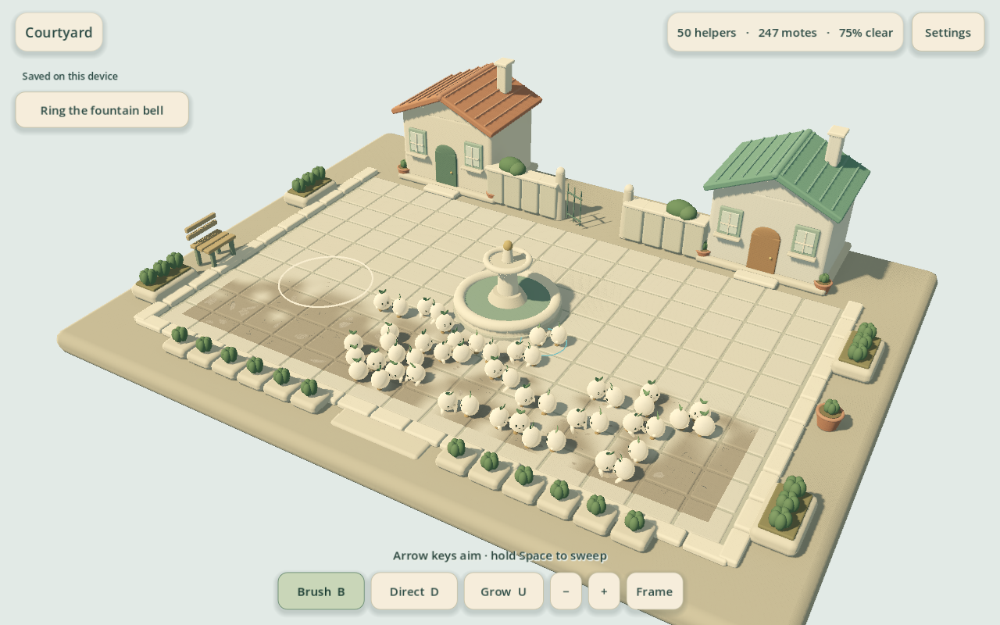
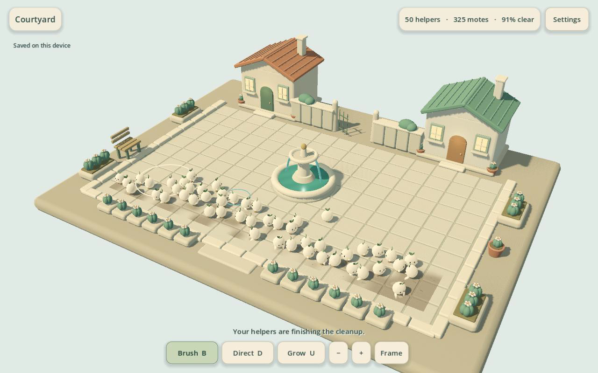
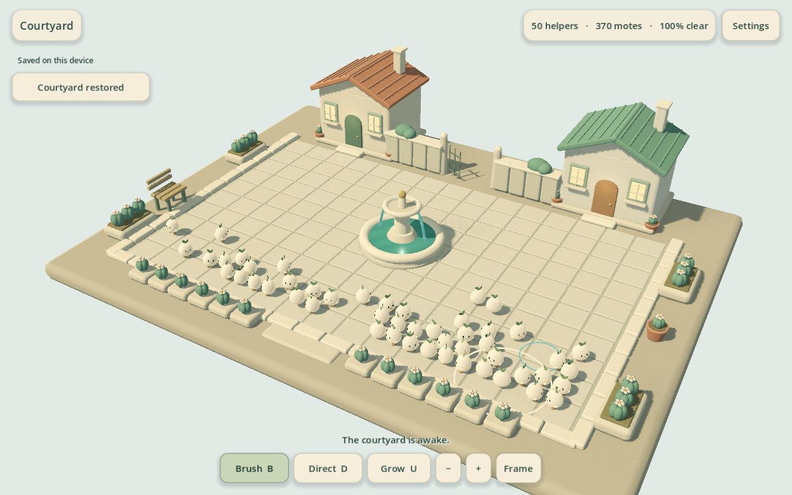

Player experience
Unfamiliar players have not yet validated understanding, comfort, appeal or voluntary continuation.
Brush an abandoned miniature courtyard, watch dust become helpers, and restore its fountain. This hub presents an unfinished development candidate and the evidence behind its next review.
0 human sessions. No current-build owner approval. No release claim. Steam Windows is the primary target; actual development testing is on Mac. iPad and iPhone remain later ports.
Unfamiliar players have not yet validated understanding, comfort, appeal or voluntary continuation.
Actual 3D captures are review evidence. Benchmark quality and satisfaction require human judgment.
The owner has not approved this exact experience, completeness or readiness to sell.
Download Mac development app ZIP
Extract the ZIP and open the app. Universal2, locally verified ad-hoc signature; no notarization.
45 artifact and separate-process checks passed in the exact packaged Mac report: opening save, fresh-process return, and blocked second-copy writes. Automated input; no human participant.
Download Windows development ZIP
Extract the ZIP, keep its files together, then open Dustlings.exe.
Windows execution remains unverified.
Engine, font and component notices accompany both development downloads. This attribution does not license the Dustlings game itself.
b5034e421843efd22b195a5ec1b7a29d26b65b2eee3a43ae3dcf50364bcdb3914c730f2cc459ebeb18559b39f376e3a3996ef92047f6dec84813aa1c8bb873ea5c2636720a404a7a1b54a57cd5409e863fec7d1cGodot MovieMaker30fps fixed engine-time with generated native InputEvents or explicitly labelled fixtures. Rendering may run faster than wall-clock; no human input.
Source matches this package. Generated native InputEvents; no progress injection. Movie mode records the engine clock; its timings are not wall-clock player measurements.
Scripted simulation timings: first helper 22.22s; restoration request 521.67s; completion 655.60s. Request to finish 133.93s includes remaining work/gathering; it is not an 18-second whole sequence. 50 helpers at the end.
Whole integrated play through generated native controls:2s brushing/5s cycle, scripted brush→teamwork→chorus purchases, periodic visible crew orders. No progress injection or accelerated simulation. Script choices are not player comprehension or human pacing.








Godot MovieMaker30fps fixed engine-time with generated native InputEvents or explicitly labelled fixtures. Rendering may run faster than wall-clock; no human input.
Source matches this package. Scripted state/interaction fixture unless its manifest explicitly states otherwise; not a natural full playthrough.
Wall-clock native run; no movie recording.
Source matches this package. Performance fixture; no human participant.
60.012401 wall-clock seconds · 7197 process callbacks · p95 14.387ms · p99 14.816ms · worst 19.911ms · 0 callback intervals over 33.4ms.
Visible native Godot Metal Forward+, 1280x800 window, normal MSAA/shadows/audio,50-helper80%-clean starting fixture. Optional --qa-profile-restore rings the real bell after60wallseconds; no later state injection. No movie or screenshots during measurement.
Mac16,7 · Apple M4 Pro · 48 GB · macOS 26.6.2. Recorded physical device and conditions
Monotonic wall-clock microseconds between every _process callback; no discarded outliers or engine delta smoothing.
These earlier 3D recordings preserve the problems that motivated changes. Compare them with the package-matched gameplay above. They are historical references, separate from the packaged candidate; the old 2D prototype is not presented as the active game.
This package predates the current corrections. Its own frozen source matches the earlier footage below; it is retained for comparison, not as the current download. Human approval was not obtained.
Godot MovieMaker30fps fixed engine-time with generated native InputEvents or explicitly labelled fixtures. Rendering may run faster than wall-clock; no human input.
Earlier capture identity · Earlier post-water frame (625s) · Earlier completed courtyard frame
Godot MovieMaker30fps fixed engine-time with generated native InputEvents or explicitly labelled fixtures. Rendering may run faster than wall-clock; no human input.
Wall-clock native run; no movie recording.
180.003568 wall-clock seconds; 21588 process callbacks; p95 14.18ms, p99 14.569ms, worst 20.031ms. Visible native Godot Metal Forward+, 1280x800 window, normal MSAA/shadows/audio,50-helper80%-clean starting fixture. Optional --qa-profile-restore rings the real bell after60wallseconds; no later state injection. No movie or screenshots during measurement.
Earlier measurement with its own conditions. Duration and phases differ from the current working-crew profile; do not interpret this as a controlled before/after performance gain.
Earlier Mac package (historical) · Earlier exact export manifest
Independent AI critique references this earlier experience. No human session or listening claim.
Historical correction capture; predates current spatial work reservations.
Dirty courtyard · Crew direction · Historical source identity
Historical camera comparison; its filename does not establish final camera acceptance.
Dirty courtyard · Crew direction · Historical source identity
All links were checked locally and their SHA-256 values are embedded in this page. Run node tools/review-3d.mjs --check to detect changed linked evidence or changed source for the selected build mode.
Observe whether unfamiliar players understand where helpers come from, direct them comfortably, recognize upgrade effects, enjoy the restoration and voluntarily continue. Ask what felt awkward, tiring, confusing or visually unpleasant. Review the actual screen size and sound, including a crowded crew.
Recruitment has not begun here: 0 incremental-game buyers, 0 cozy/cleanup players, 0 friends/developers. The initial private round targets 12–20 unfamiliar intended players. The required segment is five minutes, followed by a neutral choice to stop or continue. At least 80% should reach an upgrade without coaching by that choice point; at least half should freely choose and actively play two additional minutes. Earlier finite endings are recorded separately. This protocol was amended before any human data. Current counts are 0/0, so no rate can be calculated. These are internal decision rules, not sales predictions.
Record who reviewed which exact build, what they experienced and any disagreements. Player enthusiasm, presentation review and the owner's explicit approval remain separate gates.